#Getting the libraries needed
library(tidyverse)
library(readxl)
library(lubridate)
library(ggplot2)
library(scales)
#structuring the Columns to include the new periods
add_covid_period <- function(df) {
df %>% mutate(CovidPeriod = case_when(
Year %in% 2018:2019 ~ "Pre-COVID",
Year %in% 2020:2022 ~ "During COVID",
Year %in% 2023:2024 ~ "Post-COVID",
TRUE ~ NA_character_
))
}The Impact of Covid-19 on Türkiye
1. Project Overview and Scope
The Pandemic has had profound effects on the society and economy worldwide. It can be said that with the pandemic our lives had changed significantly and maybe some can not even remember what the life was like before pandemic. This had positive and negative impacts on the countries. This project investigates such impacts with the scope of Türkiye. The Turkish Statistical Institute (TUIK) databases will be used during this analysis of the Türkiye’s situation regarding to the impact of Covid-19 on Türkiye. The main objective is to understand the reasons and structural changes that might have happens after the Covid-19 by comparing the pre and post pandemic periods.
This project will mainly focuses on the population growth, birth and death rates, martial behaviors employment situations, trading activities. The focus will be on 3 periods 2018-2019 the pre-pandemic period, 2020 - 2022 pandemic period and lastly 2023-2024 post-pandemic period. Even though there is multiple years data on the TUIK’s database i narrowed the years to these fundamental 7 years to avoid any seasonality of the previous years recession.
2. Data
The data sets that are used are from the TUIK. The below is the details of the such structure of these data sets. Also, We need to add a new column to each database since we want the analysis to be focused on 3 time periods.
-> Here i will identify the libraries and the structure of the columns to be added later on.
1- Population Data
The population data will be used to identify the population trends, detect if there is a slowdown of population growths during or after the Covid-19.
->Here i will import the population data then add the new predefined column and show what the dataset looks like
population_data <- read_excel("Data/population.xls")
population_data <- add_covid_period(population_data)
head(population_data)# A tibble: 6 × 5
City Gender Year Population CovidPeriod
<chr> <chr> <dbl> <dbl> <chr>
1 Adana Erkek 2024 1140836 Post-COVID
2 Adana Kadın 2024 1139648 Post-COVID
3 Adıyaman Erkek 2024 309540 Post-COVID
4 Adıyaman Kadın 2024 301497 Post-COVID
5 Afyonkarahisar Erkek 2024 375263 Post-COVID
6 Afyonkarahisar Kadın 2024 374930 Post-COVID 2- Marriage Statistics
The Marriage usually used as a symbol of happiness and hope. The increase of marriages usually means that there is a general happy period of a countries. With the trend of the marriages we can understand the welfare of the country, the unemployment rate of the youth and the populations age dsitribution.If the marriages are in a increase trend we can say that the economic conditions of the country is getting better. That’s what we will be investşigating with this data set.
->Here i will import the population data then add the new predefined column and show what the dataset looks like
marriages_data <- read_excel("Data/marriages.xlsx")
marriages_data <- add_covid_period(marriages_data)
head(marriages_data)# A tibble: 6 × 4
City Year Marriages CovidPeriod
<chr> <dbl> <dbl> <chr>
1 Adana 2024 15076 Post-COVID
2 Adıyaman 2024 4720 Post-COVID
3 Afyonkarahisar 2024 4811 Post-COVID
4 Ağrı 2024 3132 Post-COVID
5 Amasya 2024 2134 Post-COVID
6 Ankara 2024 37199 Post-COVID 3- Average Age of Marriage
The average of the marriage along with the total amount of marriages in a country can show us the indebth details of the countries economic conditions. If the average age of marriage is decreasing we might say that the age distribution of the population is moving towards the youths.
->Here i will import the average age of marriage data then add the new predefined column and show what the dataset looks like
marriages_age_data <- read_excel("Data/marriages_age.xlsx")
marriages_age_data <- add_covid_period(marriages_age_data)
head(marriages_age_data)# A tibble: 6 × 5
City Year Gender Average_Marriage_Age CovidPeriod
<chr> <dbl> <chr> <dbl> <chr>
1 Türkiye 2001 "Erkek\r\n" 27.6 <NA>
2 Adana 2001 "Erkek\r\n" 28.7 <NA>
3 Adıyaman 2001 "Erkek\r\n" 28.0 <NA>
4 Afyonkarahisar 2001 "Erkek\r\n" 25.3 <NA>
5 Ağrı 2001 "Erkek\r\n" 29.2 <NA>
6 Amasya 2001 "Erkek\r\n" 26.5 <NA> 4- Birth Statistics
The birth statistics are important for a country since increasing the youth of a country can push its growth further. The trends of the birth can means that the country will be increasing the youth population.
->Here i will import the average age of marriage data then add the new predefined column and show what the dataset looks like
births_data <- read_excel("Data/births.xlsx")
births_data <- add_covid_period(births_data)
head(births_data)# A tibble: 6 × 5
City Gender_Baby Year Births CovidPeriod
<chr> <chr> <dbl> <dbl> <chr>
1 Adana Erkek-Boy 2018 18035 Pre-COVID
2 Adana Kız-Girl 2018 17352 Pre-COVID
3 Adıyaman Erkek-Boy 2018 6472 Pre-COVID
4 Adıyaman Kız-Girl 2018 6094 Pre-COVID
5 Afyonkarahisar Erkek-Boy 2018 5192 Pre-COVID
6 Afyonkarahisar Kız-Girl 2018 4883 Pre-COVID 5- Fertility Rate
This with the birth statics we can understand the distribution fo the population much better.
->Here i will import the average age of marriage data then add the new predefined column and show what the dataset looks like
fertility_data <- read_excel("Data/fertility.xlsx")
fertility_data <- add_covid_period(fertility_data)
head(fertility_data)# A tibble: 6 × 4
Year Category Fertility_Rate CovidPeriod
<dbl> <chr> <dbl> <chr>
1 2001 Doğum Hızı 20.3 <NA>
2 2002 Doğum Hızı 18.6 <NA>
3 2003 Doğum Hızı 17.9 <NA>
4 2004 Doğum Hızı 18.1 <NA>
5 2005 Doğum Hızı 18.2 <NA>
6 2006 Doğum Hızı 18.1 <NA> 6- Death Statistics
The death is an important factor to understand the affects of the Covid-19 to understand if the rates have been increased or not during or after the pandemic compared to the pre-pandemic era. With this information we can understand our immune system as a population and understand is there is any incline of certain causes of death or are we back to pre-pandemic period.
->Here i will import the population data then add the new predefined column and show what the dataset looks like
deaths_data <- read_excel("Data/deaths.xlsx")
deaths_data <- add_covid_period(deaths_data)
head(deaths_data)# A tibble: 6 × 6
Death_Code Death_Reason Gender Year Deaths_Amount CovidPeriod
<chr> <chr> <chr> <dbl> <dbl> <chr>
1 A00-B99 Enfeksiyon ve parazit hasta… Erkek 2018 5438 Pre-COVID
2 C00-D48 İyi huylu ve kötü huylu tüm… Erkek 2018 52933 Pre-COVID
3 D50-D89 Kan ve kan yapıcı organları… Erkek 2018 515 Pre-COVID
4 E00-E90 İç salgı bezi (endokrin), b… Erkek 2018 8454 Pre-COVID
5 F00-F99 Zihinsel (mental) ve davran… Erkek 2018 243 Pre-COVID
6 G00-H95 Sinir sistemi ve duyu organ… Erkek 2018 9019 Pre-COVID 7- Employment Data
This is also one of the important aspect of a countries economical indicators. The higher the employment rate the country’s internal investment are distributed. Ideally a country wants to be %100 employed. This data will be used to analyze this situation.
->Here i will import the population data then add the new predefined column and show what the dataset looks like
employment_data <- read_excel("Data/employment.xlsx")
employment_data <- add_covid_period(employment_data)
head(employment_data)# A tibble: 6 × 5
Year Gender Status Employment_Rate CovidPeriod
<dbl> <chr> <chr> <dbl> <chr>
1 2014 "Erkek\r\n" Boşandı 63.2 <NA>
2 2014 "Kadın" Boşandı 39.7 <NA>
3 2015 "Erkek\r\n" Boşandı 63.2 <NA>
4 2015 "Kadın" Boşandı 39.5 <NA>
5 2016 "Erkek\r\n" Boşandı 63.6 <NA>
6 2016 "Kadın" Boşandı 41.7 <NA> 8- Export Data
The exporting of goods and services has a similar indentations of the import. Here the increase in exports means that the country is well off şn the domestic side has sufficient diplomatic communicatin to be able to export its surplus. The trend of the exports also will give us the economical back ground of the Türkiye for the time period.
->Here i will import the population data then add the new predefined column and show what the dataset looks like
export_data <- read_excel("Data/export.xlsx")
export_data <- add_covid_period(export_data)
head(export_data)# A tibble: 6 × 4
City Year Export CovidPeriod
<chr> <dbl> <dbl> <chr>
1 Adana 2024 3111751. Post-COVID
2 Adıyaman 2024 55579. Post-COVID
3 Afyonkarahisar 2024 345845. Post-COVID
4 Ağrı 2024 51565. Post-COVID
5 Amasya 2024 165115. Post-COVID
6 Ankara 2024 14975519. Post-COVID 9- Import Data
The importing goods and services can mean that the country is not sufficiently producing the goods that is imported. This can be a good sign of diplomacy meanwhile if a country is importing all of its good we can say that this country is economically dependent. With the trend of the imports we can see if Türkiye is getting more depended with its economy.
->Here i will import the population data then add the new predefined column and show what the dataset looks like
import_data <- read_excel("Data/import.xlsx")
import_data <- add_covid_period(import_data)
head(import_data)# A tibble: 6 × 4
City Year Import CovidPeriod
<chr> <chr> <dbl> <chr>
1 Adana 2024 3486031. Post-COVID
2 Adıyaman 2024 35522. Post-COVID
3 Afyonkarahisar 2024 171471. Post-COVID
4 Ağrı 2024 155005. Post-COVID
5 Amasya 2024 50567. Post-COVID
6 Ankara 2024 17222316. Post-COVID 2.1 Preprocessing
For the preprocessing of the data I used basic excel skills since i create the structure of data i want to analyze. Also the data sets weer small in comparison to other topic i could have analyzed. What i did basically is tidying data via the tidy methodologies of the Hadley Wickham (1). I formatted my data into his ideology of data shaping this way it was much easier to use the data sets i obtained from TUIK.
3. Analysis
Once we go through the data and the explanation of the data sets i will use. We can move on with the analysis. The analysis will mainly take 6 sections. These section will separately analyzed then a conclusion will be made for each section.
3.1 Population
Understanding demographic changes is essential for evaluating the long-term effects of significant events like the COVID-19 pandemic. This section focuses on analyzing Türkiye’s population data across the pre-COVID (2018–2019), during-COVID (2020–2022), and post-COVID (2023–2024) periods using city- and gender-level statistics.
The summary table shows that Türkiye experienced a significant increase in population during the COVID period compared to the pre-COVID period. However, the growth rate declined in the post-COVID era, indicating a possible long-term demographic shift. This deceleration may reflect changes in migration, birth rates, or administrative adjustments.
population_summary <- population_data %>%
group_by(CovidPeriod) %>%
summarise(MeanPopulation = sum(Population, na.rm = TRUE)/(n()/162), Count = n())
print(population_summary)# A tibble: 3 × 3
CovidPeriod MeanPopulation Count
<chr> <dbl> <int>
1 During COVID 84524729. 486
2 Post-COVID 85518660. 324
3 Pre-COVID 82579440. 324Geographical distribution of population volumes across cities remained relatively stable throughout the periods. While most provinces showed consistent patterns, a few outlier cities displayed significant changes, possibly due to internal migration or policy-driven relocations during the pandemic.
ggplot(population_data, aes(x = CovidPeriod, y = Population, col = CovidPeriod)) +
geom_point() + scale_y_log10(labels = comma) 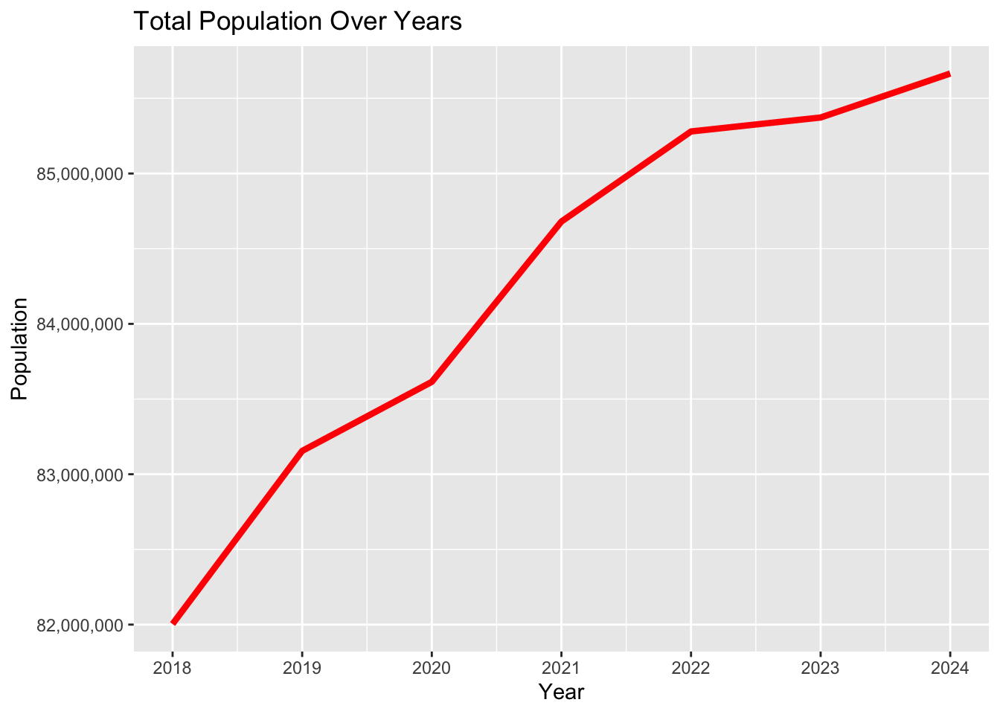
labs(title = "Population Distribution by COVID Period")$title
[1] "Population Distribution by COVID Period"
attr(,"class")
[1] "labels"In terms of gender distribution, the data suggests an almost 50-50 population split between men and women across all time periods. This indicates no gender-specific demographic shock during or after the pandemic.
ggplot(population_data, aes(x = CovidPeriod, y = Population, col = Gender)) +
geom_boxplot() + scale_y_log10(labels = comma) +
facet_wrap(~Gender) +
labs(title = "Population by Gender and COVID Period")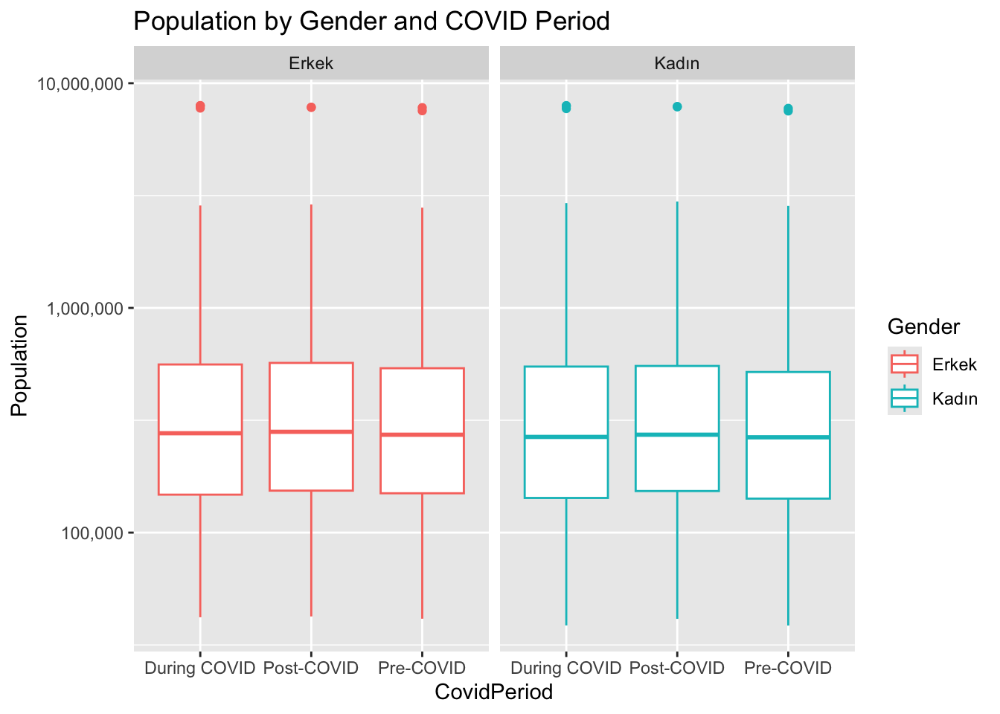
It can be said that the pandemic did not appear to alter Türkiye’s overall gender demographics or the distribution of population across most provinces. However, the slowdown in population growth in the post-COVID era is notable and warrants further investigation into underlying causes such as migration or fertility trends.
3.2 Marriage
Marriage patterns offer valuable insights into societal behavior, particularly in times of socio-economic uncertainty. This section investigates the trends in marriage volumes and average marriage age in Türkiye over the defined COVID periods.
The data clearly demonstrates that the number of marriages dropped significantly during the pandemic, likely due to strict government regulations, social distancing, and general uncertainty. Interestingly, the post-COVID period shows a marked rebound, surpassing even the pre-COVID levels. This suggests a “catch-up” effect where delayed marriages during the pandemic were actualized afterward.
marriage_summary <- na.omit(marriages_data) %>%
group_by(CovidPeriod) %>%
summarise(MeanMarriages = mean(Marriages, na.rm = TRUE)/(n()/81), Count = n())
print(marriage_summary)# A tibble: 3 × 3
CovidPeriod MeanMarriages Count
<chr> <dbl> <int>
1 During COVID 2232. 243
2 Post-COVID 3504. 162
3 Pre-COVID 3385. 162Despite these fluctuations in total numbers, annual averages of marriages appear consistent across years, indicating that the underlying societal inclination towards marriage may not have changed, only the timing.
ggplot(na.omit(marriages_data), aes(x = CovidPeriod, y = Marriages, fill = CovidPeriod)) +
geom_boxplot() + scale_y_log10(labels=comma)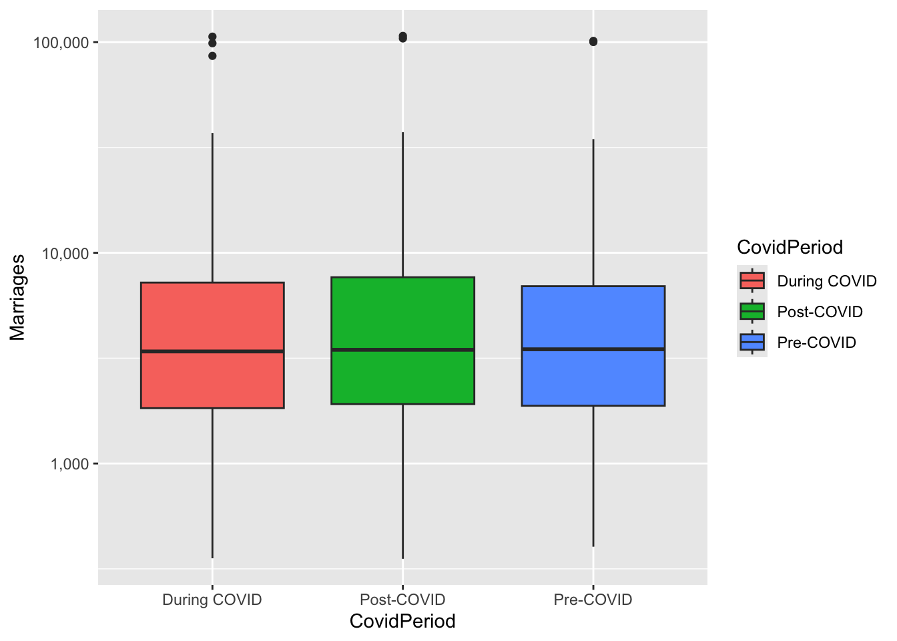
labs(title = "Marriage Count by COVID Period")$title
[1] "Marriage Count by COVID Period"
attr(,"class")
[1] "labels"Moreover, the average age at marriage has risen for both men and women by at least two years. This could be indicative of broader societal changes such as delayed adulthood, economic concerns, or educational prioritization.
ggplot(na.omit(marriages_age_data), aes(x = Gender, y = Average_Marriage_Age, fill = Gender)) +
geom_boxplot() +
facet_wrap(~CovidPeriod) +
labs(title = "Average Marriage Age by Gender and COVID Period")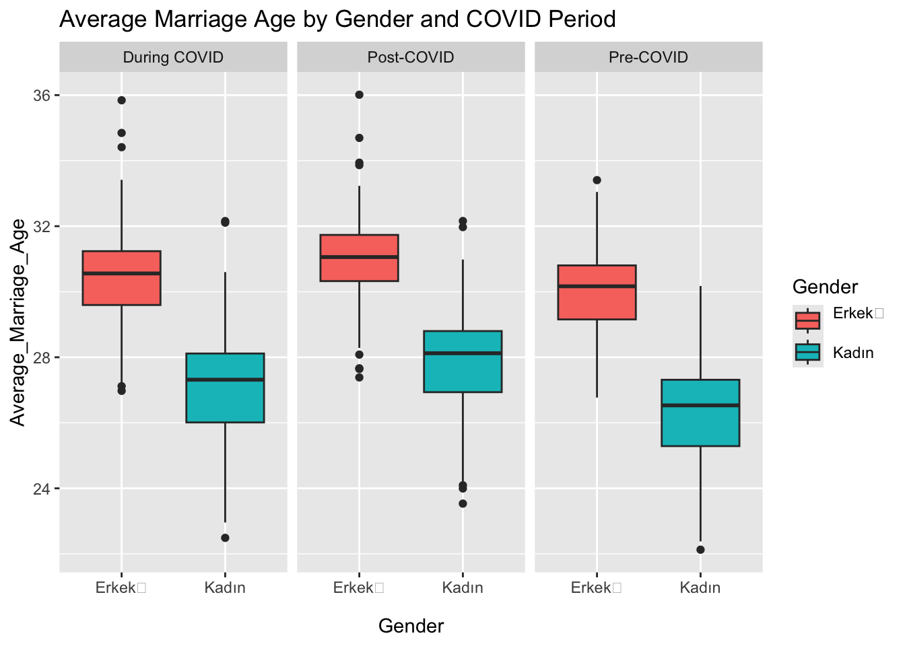
Overall, the pandemic had a temporary suppressive effect on marriage events, but long-term marriage rates remain stable. However, the rising age of marriage signals a structural transformation in social norms.
3.4 Birth and Fertility
The analysis of birth and fertility rates is crucial to assess generational continuity and public health. This section focuses on how these metrics evolved before, during, and after the COVID pandemic in Türkiye.
In contrast to the decline in marriage numbers during the pandemic, birth rates actually increased. This counterintuitive finding could suggest that family planning behaviors shifted during lockdowns or that other socio-economic factors were at play. It is worth noting that the absence of 2024 data from TÜİK may slightly skew the post-COVID average downward.
birth_summary <- births_data %>%
group_by(CovidPeriod) %>%
summarise(TotalBirths = sum(Births, na.rm = TRUE), Count = n())
print(birth_summary)# A tibble: 3 × 3
CovidPeriod TotalBirths Count
<chr> <dbl> <int>
1 During COVID 3243235 486
2 Post-COVID 958408 162
3 Pre-COVID 2448021 324Gender distribution in births remains consistent throughout all periods, mirroring the population statistics with near-equal ratios of boys and girls.
ggplot(births_data, aes(x = CovidPeriod, y = Births, fill = Gender_Baby)) +
geom_boxplot() + scale_y_log10(labels = comma) +
facet_wrap(~Gender_Baby) +
labs(title = "Births by Baby Gender and COVID Period")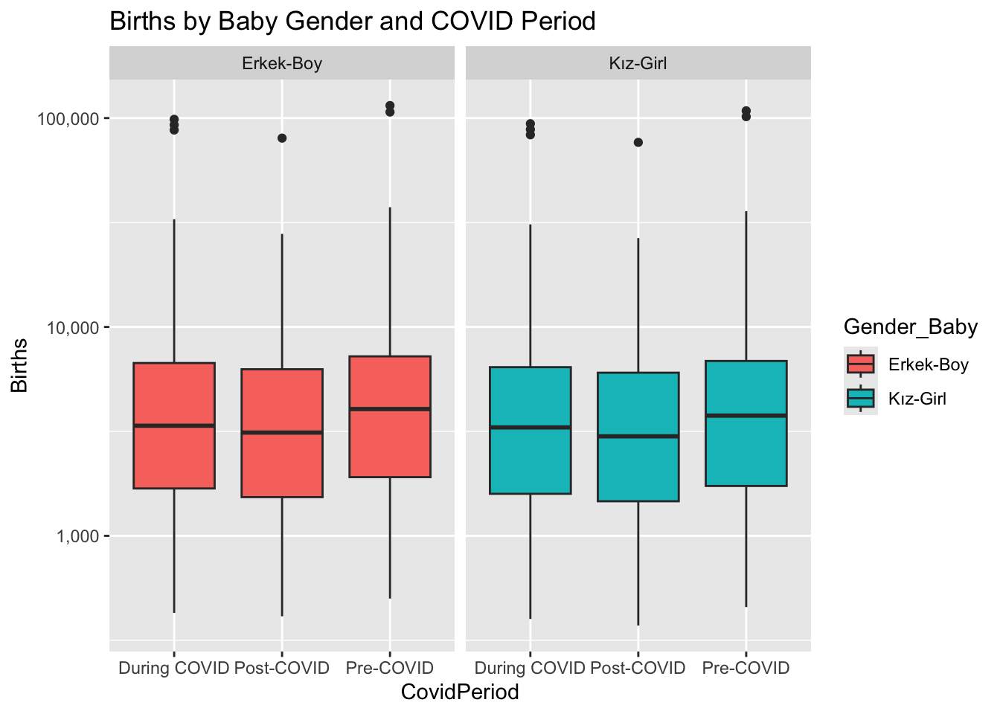
However, fertility rates have steadily declined from 15 births per 1,000 women in the pre-COVID era to 11 in the post-COVID period. This trend may reflect delayed childbearing, economic uncertainties, or broader demographic transitions.
ggplot(na.omit(fertility_data), aes(x = CovidPeriod, y = Fertility_Rate, col = CovidPeriod)) +
geom_point(size=5) +
labs(title = "Fertility by COVID Period")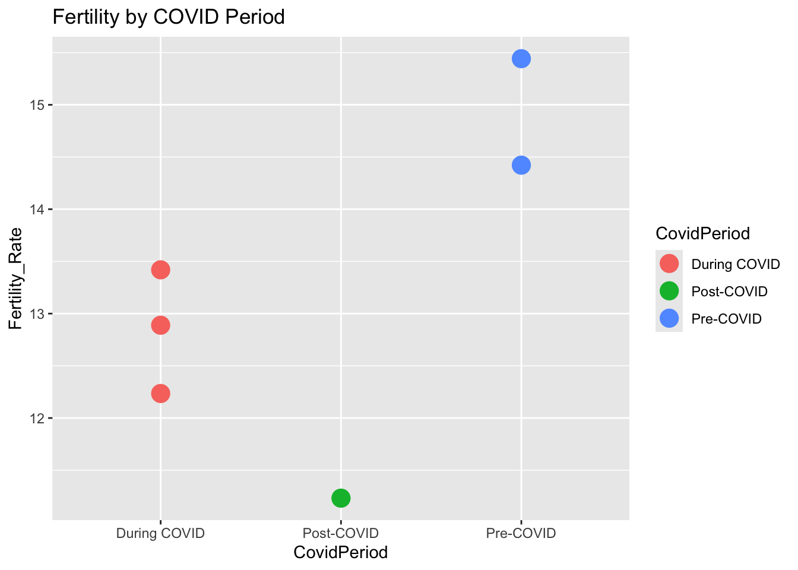
In summary, although there was a temporary rise in births during the pandemic, Türkiye continues to face a long-term decline in fertility—a concern for future labor force and demographic sustainability.
3.5 Death
Mortality trends provide a direct lens into public health crises. This section evaluates changes in total deaths, gender-specific mortality, and cause-of-death distributions over the COVID periods.
As expected, the total number of deaths peaked significantly during the pandemic. This increase aligns with global mortality surges due to COVID-19 and strained healthcare systems.
death_summary <- deaths_data %>%
group_by(CovidPeriod) %>%
summarise(TotalDeaths = sum(Deaths_Amount, na.rm = TRUE), Count = n())
print(death_summary)# A tibble: 3 × 3
CovidPeriod TotalDeaths Count
<chr> <dbl> <int>
1 During COVID 1503511 108
2 Post-COVID 495807 36
3 Pre-COVID 835577 72Male mortality rates are consistently higher than female rates across all time periods. Interestingly, while male deaths return to near pre-COVID levels in the post-COVID period, female deaths slightly decrease compared to both earlier periods. This could suggest differences in resilience, healthcare access, or underlying conditions between genders.
ggplot(deaths_data, aes(x = CovidPeriod, y = Deaths_Amount, fill = Gender)) +
geom_boxplot() + scale_y_log10(labels = comma)+
facet_wrap(~Gender) +
labs(title = "Deaths by Gender and COVID Period")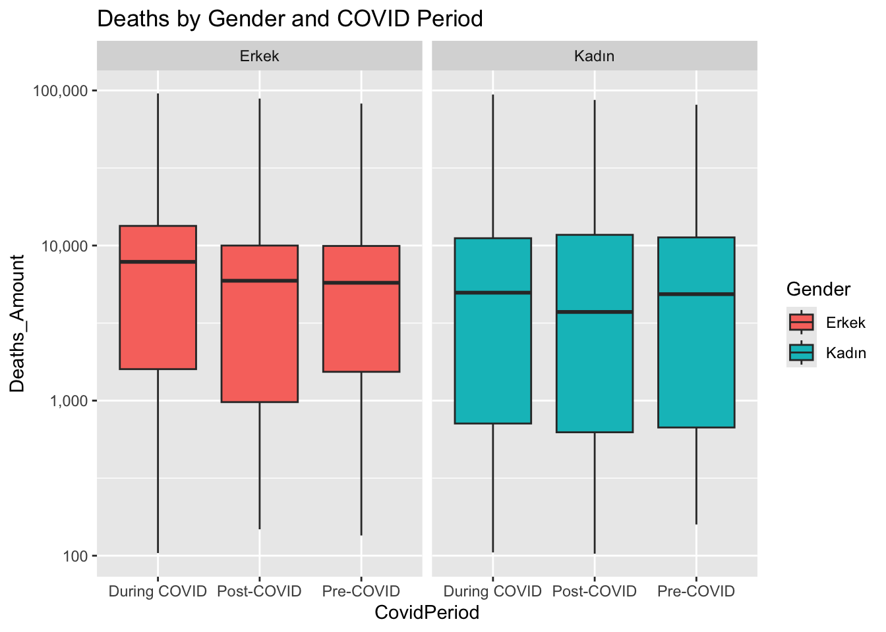
Despite the surge in death counts, the distribution of causes of death remained largely unchanged. This suggests that COVID-related deaths may have been either recorded under existing ICD categories or did not displace other dominant causes.
ggplot(deaths_data, aes(x = Death_Reason, y = Deaths_Amount, col = Death_Reason)) +
geom_point() +
facet_wrap(~CovidPeriod) +
labs(title = "Cause of Deaths by COVID Period") + theme(legend.position = "bottom")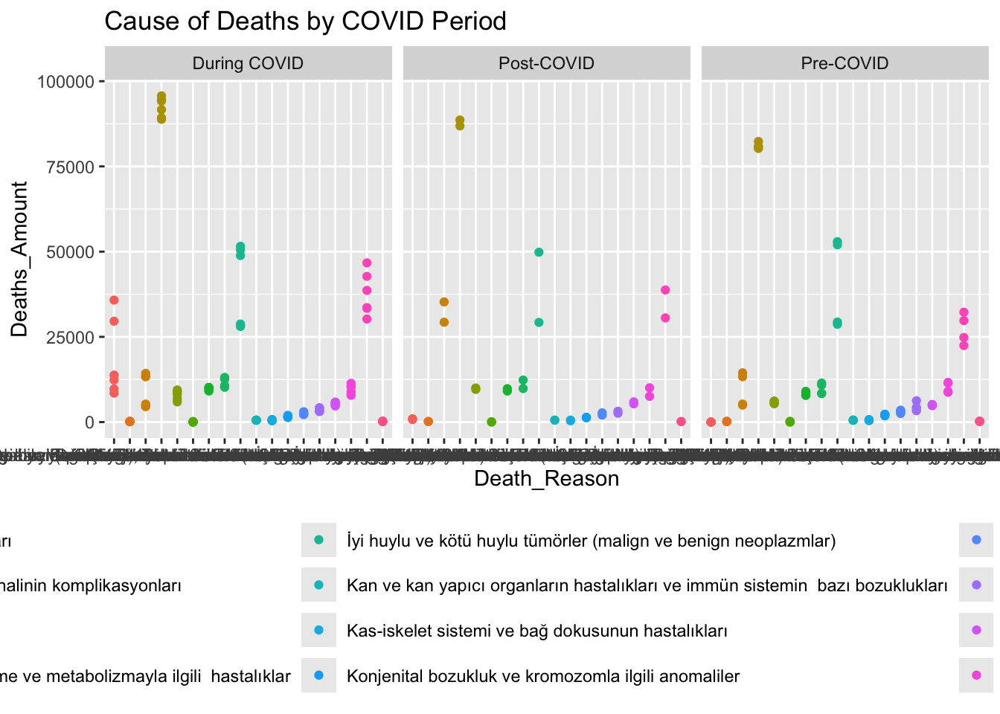
To conclude, while the pandemic caused a notable spike in mortality, its impact appears to have been temporary and gender-skewed. The consistency in cause-of-death categories may reflect either data classification limitations or resilient patterns in underlying mortality.
3.6 Employment
The labor market response to major crises like COVID-19 can have long-lasting socio-economic consequences. This section analyzes employment rates by gender and marital status across COVID periods.
Post-COVID, Türkiye experienced its highest employment rates across the observed timeline, possibly driven by economic recovery programs and adaptation to remote work structures.
employment_summary <- na.omit(employment_data) %>%
group_by(CovidPeriod) %>%
summarise(MeanEmployment = mean(Employment_Rate, na.rm = TRUE), Count = n())
print(employment_summary)# A tibble: 3 × 3
CovidPeriod MeanEmployment Count
<chr> <dbl> <int>
1 During COVID 38.4 24
2 Post-COVID 42.2 16
3 Pre-COVID 39.9 16Throughout all periods, male employment consistently exceeds that of females, regardless of marital status. These findings highlight persistent gender disparities in labor force participation, unaffected by the pandemic.
ggplot(na.omit(employment_data), aes(x = CovidPeriod, y = Employment_Rate, col = Gender)) +
geom_point() +
facet_wrap(~Status) +
labs(title = "Employment Rate by Gender, Marital Status and COVID Period")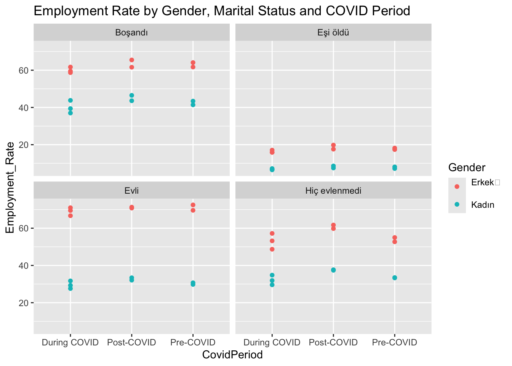
To sum up, the pandemic did not significantly change employment structures by gender or marital status, but the post-COVID recovery appears to have brought higher overall employment levels.
3.7 Export and Import
This section investigates Türkiye’s international trade trends by analyzing export and import values over the COVID periods.
Both export and import values show an increasing trend across all periods. However, the growth in import values consistently outpaces export growth. This widening trade imbalance could reflect supply chain dependencies, energy imports, or shifts in domestic consumption.
export_summary <- na.omit(export_data) %>%
group_by(CovidPeriod) %>%
summarise(MeanExport = mean(Export, na.rm = TRUE), Count = n())
print(export_summary)# A tibble: 3 × 3
CovidPeriod MeanExport Count
<chr> <dbl> <int>
1 During COVID 2638301. 246
2 Post-COVID 3155047. 164
3 Pre-COVID 2182936. 164import_summary <- na.omit(import_data) %>%
group_by(CovidPeriod) %>%
summarise(MeanImport = mean(Import, na.rm = TRUE), Count = n())
print(import_summary)# A tibble: 3 × 3
CovidPeriod MeanImport Count
<chr> <dbl> <int>
1 During COVID 3432341. 249
2 Post-COVID 4252892. 166
3 Pre-COVID 2692059. 164Visualizations confirm this pattern, with both metrics showing upward trends, but imports displaying greater variance and higher average values.
ggplot(na.omit(export_data), aes(x = CovidPeriod, y = Export, fill = CovidPeriod)) +
geom_boxplot() + scale_y_log10(labels = comma) +
labs(title = "Export Amount by COVID Period")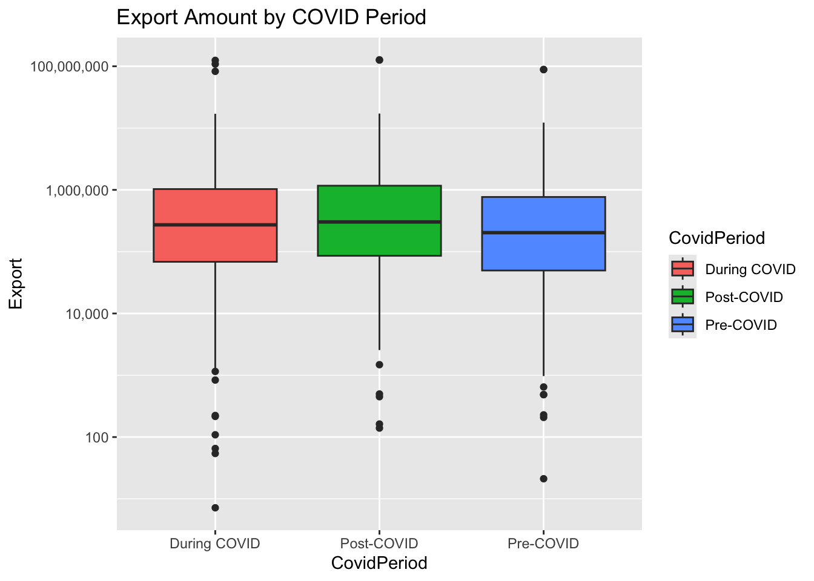
ggplot(na.omit(import_data), aes(x = CovidPeriod, y = Import, fill = CovidPeriod)) +
geom_boxplot() + scale_y_log10 (labels = comma) +
labs(title = "Import Amount by COVID Period")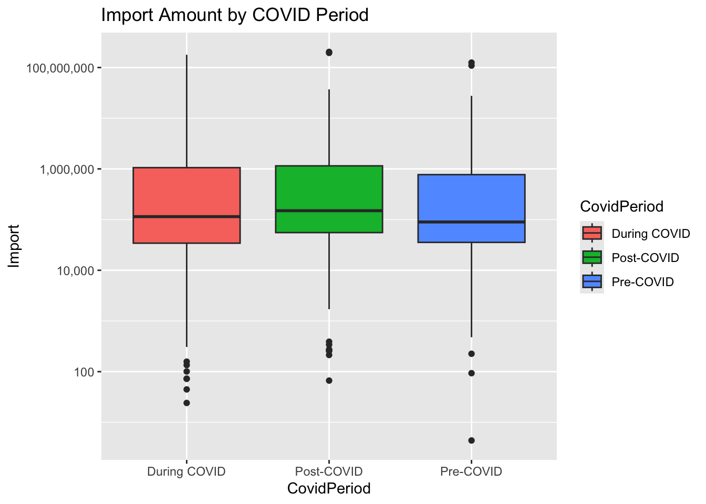
In conclusion, while Türkiye’s international trade volumes increased steadily, the persistent import surplus suggests vulnerabilities that could affect currency valuation, inflation, and trade policy decisions.
4. Results and Key Takeaways
This analysis explored the multi-dimensional effects of the COVID-19 pandemic in Türkiye using official statistics from TÜİK, spanning population, marriage, birth and fertility, death, employment, and trade indicators. By comparing three distinct time periods—pre-COVID (2018–2019), during COVID (2020–2022), and post-COVID (2023–2024)—we captured both the immediate and residual impacts of the pandemic on social and economic indicators.
Population data reveal that while Türkiye’s total population increased significantly during the COVID period, the post-COVID growth rate declined. Despite this change in pace, the distribution of population across provinces remained largely stable, except for a few outlier cities which experienced notable shifts. Gender composition of the population also remained consistent, maintaining a nearly 50-50 male-to-female ratio throughout all periods.
In the domain of marriages, a sharp drop was observed during the pandemic, attributable to social restrictions and uncertainty. Interestingly, the number of marriages rebounded in the post-COVID period, exceeding pre-pandemic levels—likely reflecting deferred unions. Despite this temporal disruption, the average number of annual marriages remained stable across the years, suggesting unchanged social norms. Additionally, both men and women began marrying later, with average marriage age increasing by at least two years, potentially signaling deeper shifts in societal expectations and life planning.
Contrary to marriage trends, birth rates increased during the COVID period. However, due to missing data for 2024, the overall post-COVID average appears lower. Gender distribution in births reflected the overall population structure, remaining balanced. Most notably, the fertility rate declined from 15 in the pre-COVID era to 11 in the post-COVID period, signaling a longer-term demographic concern regarding population replacement levels.
Unsurprisingly, death rates surged during the COVID period, with male mortality consistently exceeding female mortality in all periods. Interestingly, while men’s death counts returned to pre-COVID levels in the post-pandemic era, women experienced a slight reduction in mortality post-COVID. Despite fluctuations in volume, the patterns of causes of death remained consistent, suggesting that COVID-19 did not dramatically alter the leading underlying causes of death.
In terms of employment, the highest average employment rate was observed in the post-COVID period, pointing to a strong economic recovery. However, gender disparities remained unchanged, with male employment rates continuing to outpace those of females, irrespective of marital status. This continuity highlights enduring structural gender imbalances in the Turkish labor market.
Lastly, foreign trade data demonstrated steady growth in both exports and imports across all periods. However, the growth in imports consistently outpaced that of exports, resulting in a persistent and growing trade imbalance. This trend underscores Türkiye’s vulnerability to external supply chains and could have broader implications for macroeconomic stability, including inflation and currency valuation.
In summary, the pandemic brought immediate disruptions, particularly in mortality and marriage behavior, but many structural patterns—including gender distributions, employment gaps, and trade deficits—remained largely unchanged. Notably, delayed life decisions (e.g., marriage), reduced fertility, and post-pandemic economic recovery emerge as key themes. These findings suggest that while COVID-19 had a profound short-term impact, many long-term trajectories in Turkish society and economy were only moderately altered.